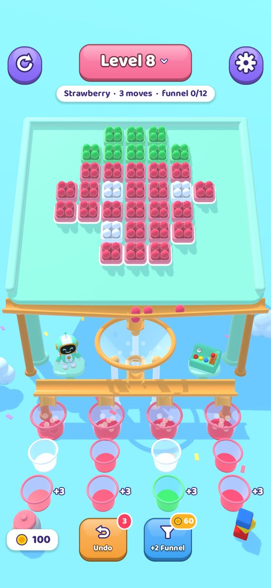
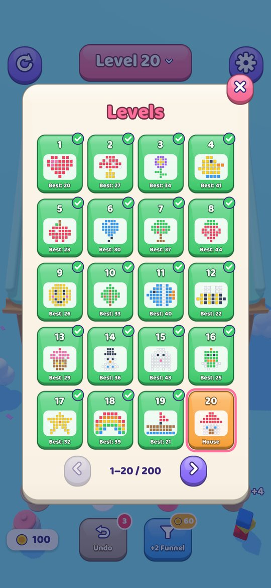
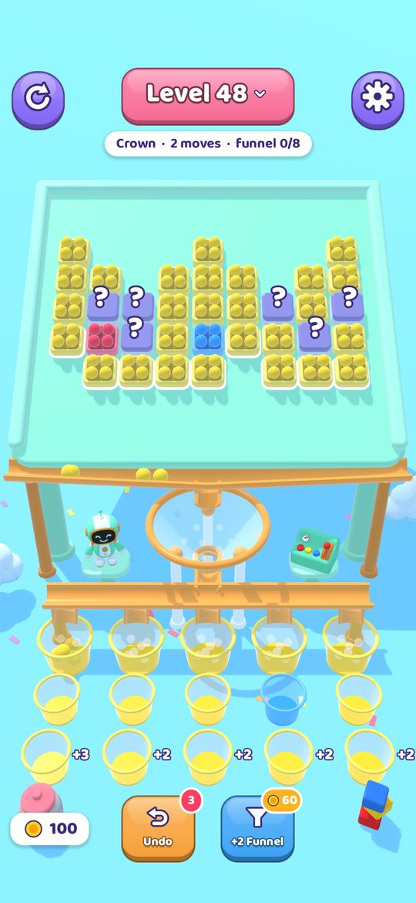
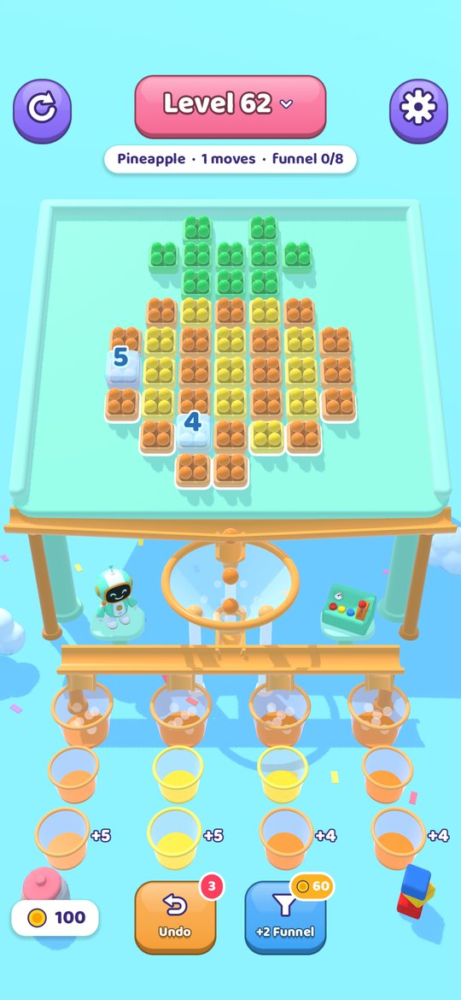

Marble Mosaic
A relaxing marble-sorting puzzle where every level is a picture. Tap the trays, watch the marbles roll through the funnel into cups of the same color, and clear the board to complete the picture.




What you do
- Sort by colorEvery marble rolls into the cup of its own color. Plan your taps so the funnel never overflows.
- 150+ picturesStrawberries, castles, rockets and more, with new levels on the way.
- Fresh twistsMystery trays hide their color until you reach them, and frozen trays melt as you play.
- Boosters and daily rewardsUndo a move, widen the funnel with +2 Funnel and collect coins every day.